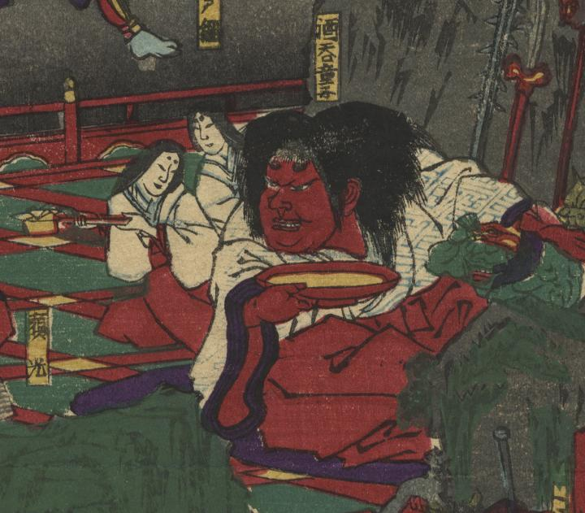

鬼；オニ

足を崩して座り、朱の酒盃で酒を飲む酒呑童子。その体躯は巨大で赤い。緋袴に紗綾形模様の着物をきている。
著作者：橋本直義／出典：親書誌：U426_nichibunken_0314：源頼光大江山鬼人退治；ミナモト ライコウ オオエヤマ キジン タイジ／日付：2014／資源識別子：U426_nichibunken_0314_0007_0000
Copyright (c)2010- International Research Center for Japanese Studies, Kyoto, Japan. All rights reserved.